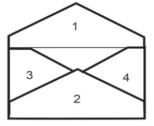

- Fold side number 2 inward. Fold it until it lies on top of sides 3 and 4 as shown in Figure 6;

- Apply glue to all the parts of sides 2, 3, and 4 that will be joined. Then, join them together and press firmly as shown in Figure 7;

